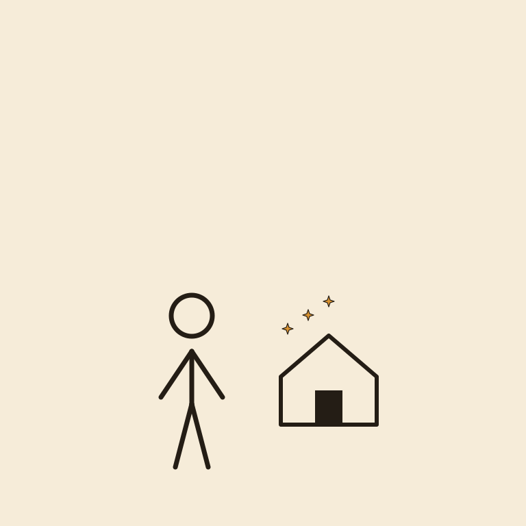

Durable

A shop built in sixty seconds looks exactly like a shop, right up until someone tries to open the door.
Durable is best used for getting a basic business website online in under a minute, when you need something live today, not a masterpiece. A new guild needs a storefront up before travelers wander past and find nothing there at all. This gets one online fast. It lands at #39 of 51 on Solos Gems (7.2/10) for website builder.
A shop built in sixty seconds looks exactly like a real shop, right up until someone actually tries to open the door and asks a slightly unusual question.
- Value for price7/10
- Capability6/10
- Ease of use8.5/10
- Trial safety8/10
Best used for
Getting a basic business website online in under a minute, when you need something live today, not a masterpiece.
How it helps the realm
A new guild needs a storefront up before travelers wander past and find nothing there at all. This gets one online fast.
Boons
- Genuinely fast, a full basic site generated in roughly a minute.
- Includes basic business tools like invoicing alongside the website itself.
- Good enough starting point for a business that just needs a presence online now.
Curses
- The design quality is functional rather than distinctive; expect a template feel.
- More custom or complex site needs will outgrow it quickly.
Common questions
Is the site good enough to launch immediately, or just a placeholder?
It's genuinely usable to launch with, especially for a simple service business needing a basic presence.
Does it include more than just a website?
Yes, some basic business tools like invoicing are bundled in.
Can I customize the design significantly?
Customization is limited compared to a dedicated site builder; it favors speed over depth.